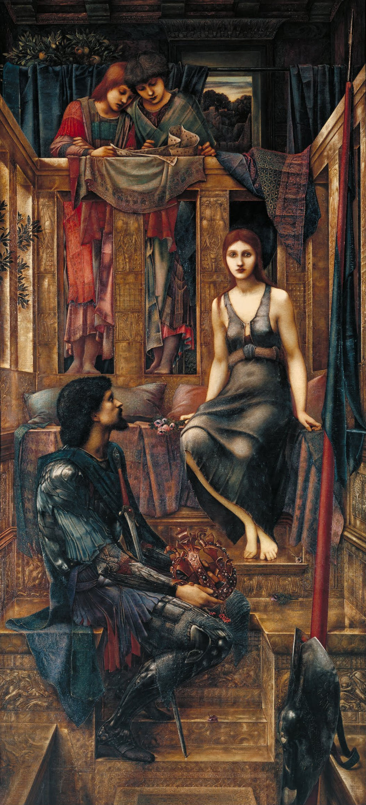

<head>
<meta charset="UTF-8" />
<meta name="keywords" content="drawing, painting" />
<meta name="description" content="drawings by Sunjy" />
<title>Sunjy</title>
<link rel="shortcut icon" type="image/x-icon" href="../../mImages/mCommon/favicon.ico" media="screen" />
<link rel="stylesheet" type="text/css" href="../../mCsses/mCommon/mCssA.css" />
<link rel="stylesheet" type="text/css" href="../../mCsses/mCommon/mCssB.css" />
<link rel="stylesheet" type="text/css" href="../../mCsses/mCommon/mCssC.css" />
<link rel="stylesheet" type="text/css" href="../../mCsses/mCommon/mCssD.css" />
<link rel="stylesheet" type="text/css" href="../../mCsses/mContent/mCssA.css" />
<link rel="stylesheet" type="text/css" href="../../mCsses/mContent/mCssB.css" />
<link rel="stylesheet" type="text/css" href="../../mCsses/mContent/mCssC.css" />
<link rel="stylesheet" type="text/css" href="../../mCsses/mContent/mCssD.css" />
</head>
<script type="text/javascript" src="../../mScripts/mContent/mContentAA.js" /></script>
<script type="text/javascript" src="../../mScripts/mContent/mContentAB.js" /></script>
<script type="text/javascript" src="../../mScripts/mContent/mContentAC.js" /></script>
<script type="text/javascript" src="../../mScripts/mContent/mContentAD.js" /></script>
<script type="text/javascript"></script> 
<script type="text/javascript">
document.write('<div class="mImgAbsolute"></div>');
/*
document.write('<p class="mFontSizeBColor" />From a white paper...</p>');
document.write('<table class="center"><tr><td>');
document.write('');
document.write('</td></tr></table>');
*/
</script>


<script type="text/javascript">
document.write('<p class="mFontSizeBColor" />King Cophetua and the Beggar Maid</p>');
document.write('<p class="mFontSizeSColor" />“King Cophetua and the Beggar Maid” by Edward Burne-Jones illustrates the story which tells the legend of King Cophetua, who fell in love at first sight with the beggar Penelophon.<br><br>A 16th-century ballad tells the story of an African king, Cophetua, who was renowned for his lack of interest in women.<br><br>One day while looking out a palace window, he witnesses a young beggar, Penelophon. Struck by love at first sight, Cophetua decides that he wanted the beggar girl as his wife.<br><br>King Cophetua rushed out into the street, he scatters coins for the beggars to gather, and when Penelophon comes forward, he asks her to be his wife. S<br><br>he agrees and becomes queen, and soon loses all trace of her former poverty and beggar life. The couple thrives together and becomes much loved by their people.<br><br>When they died, they were buried in the same tomb. At the time, the story became widely referenced and became a byword for “Love at first sight.”<br><br>Shakespeare mentions the ballad by title in several plays. It is referenced or alluded in Love’s Labor’s Lost, A Midsummer Night’s Dream, Romeo and Juliet, Richard II, and Henry IV, all written in the 1590s.<br><br>The tale was familiar to Burne-Jones through the sixteen-line poem The Beggar Maid by Alfred, Lord Tennyson.<br><br>Love at First Sight<br><br>Love, at first sight, has been explored by many cultures in various forms of literature, poetry, film, and art. Biblical and literary examples include:<br>•Bible Commentaries describe the account of Isaac’s first view of Rebekah (Genesis) as love at first sight<br>•Similarly for Jacob’s first sight of Rachel<br>•For Dante Alighieri, he fell in love with Beatrice Portinari at an early age. Beatrice appears as a guide in Alighieri’s “Divine Comedy.”<br>•In “Romeo and Juliet,” Romeo falls in love with Juliet when he first sees her.<br>•In “Sense and Sensibility,” Brandon was captivated by Marianne’s voice and fell in love with Marianne at first sight<br>•In “Les Misérables,” Marius and Cosette fall in love after glancing into each other’s eyes.<br>•In “The Little Mermaid” by Hans Christian Andersen, the mermaid falls in love with a human prince<br><br>In films, there are multiple examples, such as in “The Godfather” where Michael gets “hit by the thunderbolt” when he first sees Apollonia.<br><br>The Beggar Maid by Alfred Lord Tennyson<br><br>“She was more fair than words can say:<br>Bare-footed came the beggar maid<br>Before the king Cophetua.<br>In robe and crown the king stept down,<br>To meet and greet her on her way;<br>“It is no wonder,” said the lords,<br>“She is more beautiful than day.”<br></p>');
document.write('<table class="center" /><tr><td>');
document.write('<br>A 16th-century ballad tells the story of an African king, Cophetua, who was renowned for his lack of interest in women.<br><br>One day while looking out a palace window, he witnesses a young beggar, Penelophon. Struck by love at first sight, Cophetua decides that he wanted the beggar girl as his wife.<br><br>King Cophetua rushed out into the street, he scatters coins for the beggars to gather, and when Penelophon comes forward, he asks her to be his wife. S<br><br>he agrees and becomes queen, and soon loses all trace of her former poverty and beggar life. The couple thrives together and becomes much loved by their people.<br><br>When they died, they were buried in the same tomb. At the time, the story became widely referenced and became a byword for “Love at first sight.”<br><br>Shakespeare mentions the ballad by title in several plays. It is referenced or alluded in Love’s Labor’s Lost, A Midsummer Night’s Dream, Romeo and Juliet, Richard II, and Henry IV, all written in the 1590s.<br><br>The tale was familiar to Burne-Jones through the sixteen-line poem The Beggar Maid by Alfred, Lord Tennyson.<br><br>Love at First Sight<br><br>Love, at first sight, has been explored by many cultures in various forms of literature, poetry, film, and art. Biblical and literary examples include:<br>•Bible Commentaries describe the account of Isaac’s first view of Rebekah (Genesis) as love at first sight<br>•Similarly for Jacob’s first sight of Rachel<br>•For Dante Alighieri, he fell in love with Beatrice Portinari at an early age. Beatrice appears as a guide in Alighieri’s “Divine Comedy.”<br>•In “Romeo and Juliet,” Romeo falls in love with Juliet when he first sees her.<br>•In “Sense and Sensibility,” Brandon was captivated by Marianne’s voice and fell in love with Marianne at first sight<br>•In “Les Misérables,” Marius and Cosette fall in love after glancing into each other’s eyes.<br>•In “The Little Mermaid” by Hans Christian Andersen, the mermaid falls in love with a human prince<br><br>In films, there are multiple examples, such as in “The Godfather” where Michael gets “hit by the thunderbolt” when he first sees Apollonia.<br><br>The Beggar Maid by Alfred Lord Tennyson<br><br>“She was more fair than words can say:<br>Bare-footed came the beggar maid<br>Before the king Cophetua.<br>In robe and crown the king stept down,<br>To meet and greet her on her way;<br>“It is no wonder,” said the lords,<br>“She is more beautiful than day.”<br>" />');
document.write('</td></tr></table>');
</script>


